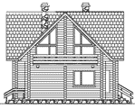
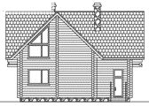

| Комплектация: | Цена (руб): | Цена с учетом 10% сезонной скидки (руб.): |
| Полный комплект чертежей: | 23400 | 21060 |
| Только архитектурно-строительные чертежи: | 19800 | 17820 |
| Дополнительный комплект чертежей (копия): | 2340 | 2106 |
| Паспорт проекта: | 2340 | 2106 |
| 1 этаж | Мансарда |
| |
| Вид спереди | Вид сзади |
 |  |
| Вид слева | Вид справа |
 |  |
Срок получения чертежей - от 1 до 7 дней.
Вопросы по проектам, заказ проектов по телефонам: (343) 310-29-81, 326-75-54